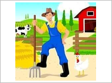

Thời gian: 35 phút. Còn 10 phút hệ thống nhắc; hết giờ có thêm 5 phút gia hạn rồi tự động nộp.
Bài làm ở chế độ toàn màn hình. Chuyển tab, mất focus, thoát toàn màn hình đều bị ghi nhận và báo cho giáo viên.
Không dùng chuột phải, sao chép/dán, phím tắt. Đáp án và giải thích chi tiết hiển thị sau khi nộp bài.
Đã nghe: 0/3 lần. Số lần nghe tối đa: 3.
A. Listening. Listen and choose the correct answers to complete sentences (nghe, chọn đáp án hoàn thành câu).
1
1. I ____ in the morning.
2
2. You ____ in the evening.
3
3. She goes home at ____.
4
4. Tom ____ at 5 p.m.
5
5. You ____ in the afternoon.
B. Vocabulary & Grammar. I. Odd one out (chọn từ khác loại).
6
1. Chọn từ khác loại:
7
2. Chọn từ khác loại:
8
3. Chọn từ khác loại:
9
4. Chọn từ khác loại:
10
5. Chọn từ khác loại:
II. Match (nhìn tranh, chọn từ đúng).
11
Nối (chọn đáp án đúng cho từng dòng):
→

→
→
→
→
III. Choose the correct answer (chọn đáp án đúng).
12
1. ____ does he work? – He works in a hospital.
13
2. I like beef. It’s my favourite ____.
14
3. What ____ they look like?
15
4. How ____ is this bag?
16
5. Would you like ____ water?
IV. Read the passage and complete the sentences (đọc đoạn văn, hoàn thành câu).
My brother’s name is Dat. He is 10 and he studies at Cambridge Primary School. He often gets up at six o’clock in the morning. He usually has breakfast at six thirty. Then, he goes to school by bus. He has got Maths and Science in the morning and his class starts at seven o’clock. He studies to eleven o’clock. He and his friends have lunch in the canteen. He learns English and History in the afternoon. His class finishes at five p.m. He is at home at five thirty and helps mom to clear the table and cook the dinner. He watches TV, then goes to bed at 11 p.m.
17
Dat studies at .
18
He at six o’clock in the morning.
19
His class starts at .
20
He has lunch in .
21
He at 11 p.m.
V. Read and choose the correct words (chọn từ đúng).
22
1. This is my uncle. He is ____ worker.
23
2. ____ you like some orange juice? – No, thanks.
24
3. ____ does he do at Tet? – He cleans the house.
25
4. ____ is your favourite food? – Pork.
26
5. What does ____ mother look like?
--:--
Bắt đầu làm bài kiểm tra
Nhập thông tin để hệ thống ghi nhận kết quả.
Nhắc giờ
⏰ Đã hết giờ làm bài
Bạn có thêm 5 phút để hoàn tất. Hết 5 phút bài sẽ tự động nộp.
⚠ Bạn đã thoát toàn màn hình
Hành vi này đã được ghi nhận. Hãy quay lại chế độ toàn màn hình để tiếp tục làm bài.